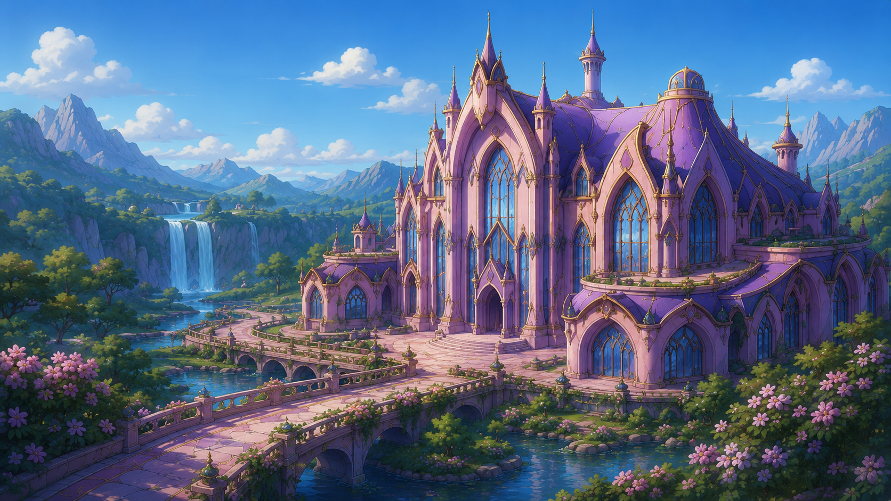
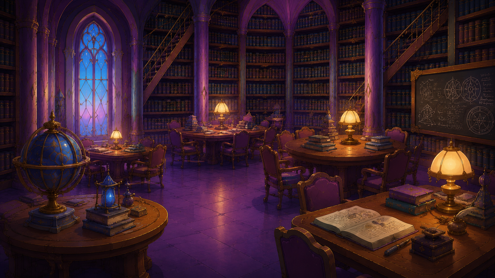
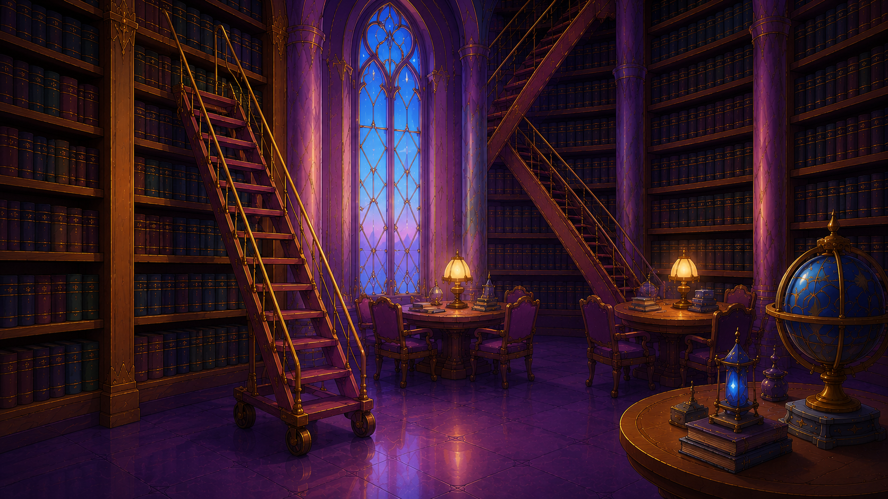
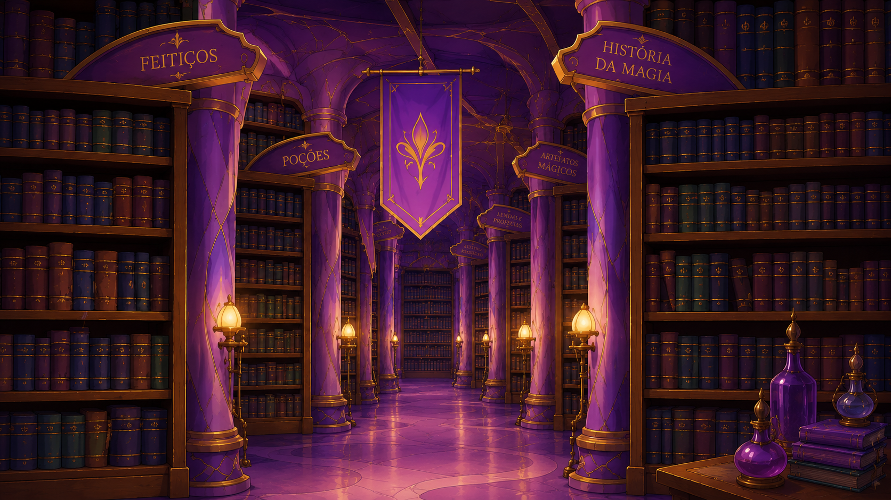

A Biblioteca de Alfea foi fundada há mais de mil anos, junto com o Colégio Alfea, pelas três fadas ancestrais. Ao longo dos séculos, a biblioteca se tornou o maior repositório de conhecimento mágico da Dimensão Mágica, abrigando grimórios raros e pergaminhos de reinos extintos.
Missão: Preservar, organizar e disseminar o conhecimento mágico para todas as fadas e especialistas de Magix, garantindo que as futuras gerações tenham acesso à sabedoria ancestral.
Visão: Ser reconhecida como a mais completa e acessível biblioteca de ciências mágicas da Dimensão Mágica, formando guardiãs do conhecimento e promovendo a cultura entre todos os reinos.
Valores: Acesso democrático à informação, acolhimento a todos os seres mágicos, inovação com tradição e respeito à diversidade mágica.



